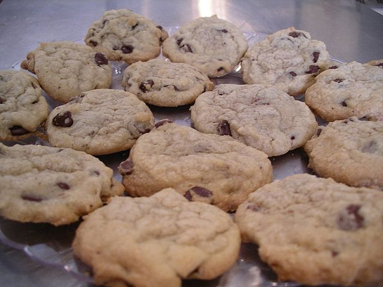

Chocolate Chip Cookies

Description
These are some of the best cookies on allrecipes according to the reviews. One of the interesting things that this recipe has that most other recipes don't include is a while chocolate pudding mix. The reviews say that they are "moist" and "chewey" and "they stay soft long after they are baked".
Ingredients (makes 30 cookies)
- 2 ¼ cups all-purpose flour
- 1 teaspoon baking soda
- 1 teaspoon salt
- 1 (3.3 ounce) package instant white chocolate pudding mix
- 1 cup butter, softened
- 1 cup white sugar
- ¾ cup brown sugar
- 2 eggs
- 2 teaspoons vanilla extract
- 2 cups semisweet chocolate chips
Directions
- Preheat the oven to 375 degrees F (190 degrees C).
- Stir together the flour, baking soda, salt and instant pudding powder; set aside.
- In a medium bowl, cream together the butter, white sugar and brown sugar until smooth. Blend in the eggs and vanilla.
- Gradually mix in the dry ingredients until just blended. Stir in the chocolate chips by hand using a wooden spoon.
- Scoop cookies using an ice cream scoop or by heaping tablespoons. Place cookies at least 2 inches apart onto ungreased cookie sheets.
- Bake for 8 to 10 minutes in the preheated oven, until lightly golden. Cool on baking sheets for a few minutes before removing to wire racks to cool completely.
Nutritional Facts per Cookie
- 189 calories
- 2g protien
- 24.8g carbohydrates
- 9.9g fat
- 28.8g cholesterol
- 179.6mg sodium
Source for recipe
Return to all recipes